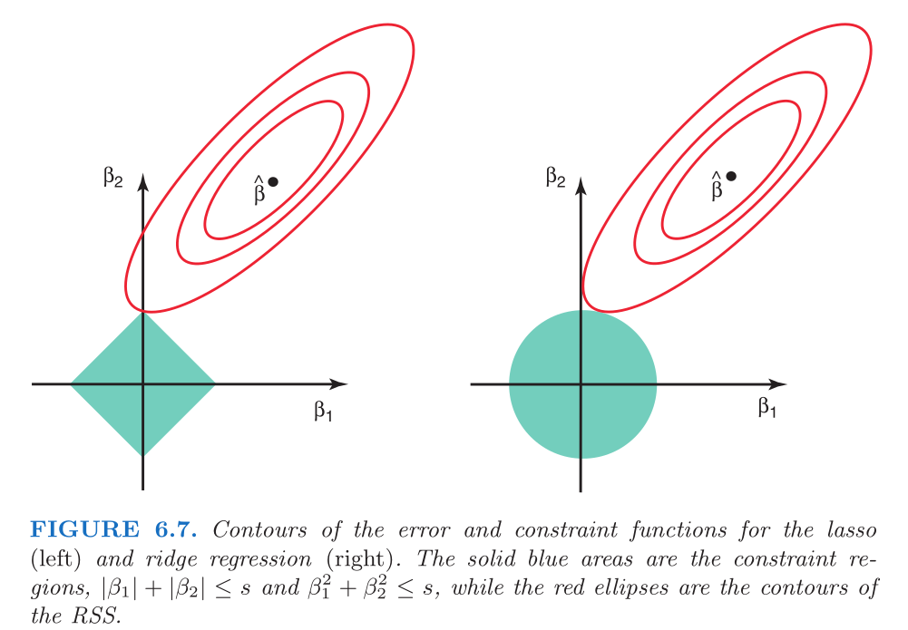

A primeira ideia que alguém pode ter ao querer fazer seleção de modelo é uma ideia estupidamente simples: ajustar cada modelo possível e escolher o melhor. Essa abordagem tem alguns problemas.
O número de modelos possíveis é dado por \(\sum_{i=0}^{n} {n \choose i} \approx \mathcal{O} (n!)\) (\(n\) é o número de covariáveis disponíveis), que cresce exponencialmente com \(n\).
Alguma métrica de ajuste deve ser eleita como a métrica de seleção de modelo: \(R^2\), \(EQM_{pred}\), \(C_p\) de Mallow, \((A/B)IC\). Se todas as métricas apontam para o mesmo modelo, mazel tov!; se não, em qual confiar?
Acúmulo de erros: alguma correção (Bonferroni, Tukey, etc.) deveria ser feita ao analisar os p-valores.
Engenheiros (e, pior, economistas) gostam dessa ideia.
Código
f =function(n) { s =0for (i in1:n) { s = s +choose(n, i) } s}seq(1, 20, 1) |>lapply(f) |>unlist() |>plot(type ='l',xlab ="número de covariáveis numéricas",ylab ="número de possíveis modelos",main ="grau de complexidade da seleção de modelos naïve" )
A seleção de variáveis stepwise lida com esse problema usando o fato que muito desses modelos são encaixados, e em seguida verificando o efeito que a inclusão e/ou exclusão de covariáveis tem nas medidas de ajuste do modelo. Isso evita o ajuste de uma quantidade muito grande de modelos, mas em casos patológicos pode não ser suficiente - e nem é garantido que o melhor modelo será selecionado.
1.2 Ridge
A técnica Ridge foi a primeira das três técnicas a surgir, no trabalho de Hoerl & Kennard (1970). Originalmente, os autores buscavam entender como lidar com problemas em que a matriz de covariáveis \(X\) estava mal-especificada. Relembrando que na regressão linear normal, temos que
\[
Y = X \beta + \epsilon, \hspace{1cm} \epsilon \sim N_n\bigr( 0, \sigma^2 I_n \bigr)
\] O estimador de máxima verossimilhança (EMV) de \(\beta\) será o mesmo estimador de mínimos quadrados (EMQ).
Nesse sentido, se temos uma matriz de dados problemática - no sentido em que \((X^\top X)^{-1}\) não está bem definida, teremos problema de estimação via EMQ.
Call:
lm(formula = Y ~ 0 + X)
Coefficients:
X1 X2
1.954 NA
Note que, embora a estrutura de regressão esteja na segunda covariável, o modelo só conseguiu estimar um beta - e o alocou na primeira covariável. Apesar de esse exemplo ser simples - e mal especificado, uma vez que há dois modelos idêncicos com parâmetros diferentes -, serve de exemplo de como a matriz \(X\) é importante para a boa especificação do modelo.
set.seed(12345)n =10beta =c(1, 0)X =cbind(1:n, 2*(1:n))ruido =cbind(rep(0,n), rnorm(n,0,.1))X = X + ruidoY = X %*% beta +rnorm(n)
Call:
lm(formula = Y ~ 0 + X)
Residuals:
Min 1Q Median 3Q Max
-0.8382 -0.4545 0.1118 0.3098 1.9804
Coefficients:
Estimate Std. Error t value Pr(>|t|)
X1 6.658 7.724 0.862 0.414
X2 -2.820 3.871 -0.729 0.487
Residual standard error: 0.8939 on 8 degrees of freedom
Multiple R-squared: 0.9846, Adjusted R-squared: 0.9808
F-statistic: 256.5 on 2 and 8 DF, p-value: 5.558e-08
Nesse segundo cenário, após a inclusão de um ruído pequeno, a colinearidade deixa de ser exata, mas permanece quase perfeita. Embora exista \((X^\top X)\), os autovalores dassa matriz estão desbalanceados.
Do ponto de vista da modelagem, esses exemplos reforçam a importância da parcimônia: incluir mais covariáveis não implica num modelo mais bem ajustado. Quando novas covariáveis carregam essencialmente a mesma informação já contida nas demais, o modelo se torna artificialmente mais complexo e mais imprevisível.
A proposta de Hoerl & Kennard (1970) é adicionar um certo múltiplo da matriz identidade à \(X^\top X\), de modo que seja possível superar os problemas de uma matriz \(X\) mal especificada. James, Witten, Hastie, & Tibshirani (2021) mostra que isso é equivalente a adicionar uma punição no processo de estimação por mínimos quadrados.
em que \(\lambda_{ridge}\) é uma constante positiva (escolhida pelo pesquisador) que dá o peso dessa punição.
Note que:
À medida que \(\lambda\) cresce, menores ficam as estimativas dos betas, \(\hat\beta_{ridge} \rightarrow 0,\ \lambda_{ridge} \rightarrow \infty\).
Não faz sentido incluir o intercepto no processo de shrinkage, pois \(g(\beta_0)\) é o valor esperado da variável resposta dado que as demais covariáveis são zero, em que \(g\) é uma função de ligação.
Fica claro que a depender do valor de \(\lambda\) que escolhemos, estamos incluindo algum viés no modelo.
A estimação ridge diminui as estimativas dos betas na mesma proporção (se comparada com o MMQ tradicional).
Em diminuindo a estimativa dos betas, diminui-se também a variância envolvida nas estimativas dos parâmetros.
Aviso
Ao usar métodos de regularização, estamos fazendo um trade-off entre variância e viés. Grosso modo, estamos inserido algum viés em nossas estimativas, a fim de diminuir a variância na estimação dos parâmetros e assim fazer inferências mais precisas.
Um bom método de escolha do parâmetro de shrinkage é crucial para o bom funcionamento da estimação ridge. Falaremos disso nas próximas seções. Spoiler: faremos validação cruzada.
Analogia dos dardos para pensar variância e viés.
O exemplo abaixo está no livro James et al. (2021), Credit é um conjunto de dados incluído no pacote ISLR, contendo informações sobre 4000 clientes de um banco, com o objetivo de modelar e entender fatores associados ao limite de crédito de cada pessoa.
A técnica ridge pode ser muito sensível à escala das covariáveis. Por isso, vale a pena padronizar as covariáveis pelo desvio-padrão para evitar a influência desse efeito.
1.3 Lasso
A regressão lasso surgiu com o artigo de Tibshirani (1996). No caso da regressão linear normal, a diferença entre lasso e ridge pode ser vista na função de perda da estimação mínimos quadrados. Em vez de usar a norma \(\ell_2\) (como faz a regressão ridge), a regressão lasso usa a norma \(\ell_1\) de beta.
Muitas das observações que fizemos para a estimação ridge se aplicam também à regressão lasso. A principal diferença entre essas técnicas está no fato de que a regressão lasso faz, de fato, uma seleção de variáveis. Isso se dá pois a regressão lasso pode zerar os coeficientes de algumas covariáveis.
Nota
O fato de a regressão lasso poder zerar os coeficientes das covariáveis está associado com a geometria imposta no espaço paramétrico. 
No mesmo banco de dados Credit, James et al. (2021) aplicou a regressão lasso:
Exemplo de regressão lasso.
1.4 Comparação das técnicas
“You Can’t Always Get What You Want”
Apesar de partirem de ideias semelhantes, há algumas diferenças práticas entre elas. De acordo com J. H. Friedman, Hastie, & Tibshirani (2010), a regressão ridge é conhecida por diminuir os coeficientes de covariáveis muito correlacionadas, permitindo que eles “tomem emprestada a força uns dos outros”. No caso extremo de \(k\) preditores iguais estimados juntos, a regressão ridge faria uma estimativa igual a \(1/k\) do que teríamos se fosse ajustado um modelo só com um deles (grouping effect). Nesse sentido, ela vai ter um melhor desempenho no caso em que temos muitos preditores com coeficientes pequenos (mas não nulos).
A regressão lasso, por sua vez tende a tratar covariáveis muito correlacionadas como uma só fonte de variabilidade (escolhendo uma - nem sempre a melhor - para estimar o coeficiente e ignorando as outras). Assim, ela funciona melhor quando há esparsidade nos coeficientes, isto é, muitos deles são próximos a zero e só numa parte deles há de fato regressão. Isso é mais comum em grandes bancos de dados.
1.4.1 Estudo sobre MSE com dados sintéticos
sqres =function(beta, X, Y) { res = Y - X %*% betadrop(crossprod(res))}sqres_ridge =function(beta, X, Y, lambda) { res = Y - X %*% betadrop(crossprod(res) + lambda *crossprod(beta))}sqres_lasso =function(beta, X, Y, lambda) { res = Y - X %*% betadrop(crossprod(res) + lambda *sum(abs(beta)))}
Nota
Note que minimizar sqres deve dar o mesmo resultado que lm.
Esse exemplo simples mostra como nem a regressão lasso nem a regressão ridge vão ser uniformemente superiores uma a outra em todos os cenários. Isso evidencia a necessidade do uso de validação cruzada, tanto para sabermos qual técnica usar quanto para acharmos o \(\lambda\) ótimo.
1.5 Elastic net
“Can you?”
O artigo Zou & Hastie (2005) introduz o elastic net, que nada mais é que uma mistura das técnicas ridge e lasso. A ideia inicial considera o seguinte estimador:
\(\lambda_{ridge}\) e \(\lambda_{lasso}\) são os coeficientes associados às penalidades \(\ell_2\) e \(\ell_1\), respectivamente;
\(\alpha \in [0,1]\) é o peso da penalidade \(\ell_2\) e \(\lambda_{en}\) é uma média das penalidades somadas.
A regressão elastic net goza das seguintes propriedades:
É possível que todas as covariáveis sejam selecionadas, como a regressão ridge;
Assim como a regressão lasso, alguns coeficientes podem ser estimados como zero (seleção de variáveis);
Em cenários com preditores muito parecidos, a elastic net pode agir como a regressão ridge (grouping effect).
Friedman, J. H., Hastie, T., & Tibshirani, R. (2010). Regularization Paths for Generalized Linear Models via Coordinate Descent. Journal of Statistical Software, 33(1), 1–22. Obtido de https://www.jstatsoft.org/index.php/jss/article/view/v033i01
Friedman, J., Hastie, T., Tibshirani, R., et al. (2025). glmnet: Lasso and Elastic-Net Regularized Generalized Linear Models. Stanford University. Obtido de https://glmnet.stanford.edu/
Hoerl, A. E., & Kennard, R. W. (1970). Ridge Regression: Biased Estimation for Nonorthogonal Problems. Technometrics, 12(1), 55–67. Obtido de https://www.jstor.org/stable/1267351
James, G., Witten, D., Hastie, T., & Tibshirani, R. (2021). An Introduction to Statistical Learning: With Applications in R. Springer Texts em Statistics. Springer. Obtido de https://link.springer.com/book/10.1007/978-1-0716-1418-1
Kuhn, M., & Silge, J. (2022). Tidy Modeling with R. O’Reilly Media. Obtido de https://www.tmwr.org/
R Core Team. (2024). R: A Language and Environment for Statistical Computing. Vienna, Austria: R Foundation for Statistical Computing. Obtido de https://www.r-project.org/
Tay, J. K., Narasimhan, B., & Hastie, T. (2023). Elastic Net Regularization Paths for All Generalized Linear Models. Journal of Statistical Software, 106(1), 1–31. Obtido de https://www.jstatsoft.org/article/view/v106i01
Tibshirani, R. (1996). Regression Shrinkage and Selection via the Lasso. Journal of the Royal Statistical Society. Series B (Methodological), 58(1), 267–288. Obtido de https://www.jstor.org/stable/2346178
Zou, H., & Hastie, T. (2005). Regularization and Variable Selection via the Elastic Net. Journal of the Royal Statistical Society. Series B (Statistical Methodology), 67(2), 301–320. Obtido de https://www.jstor.org/stable/3647580